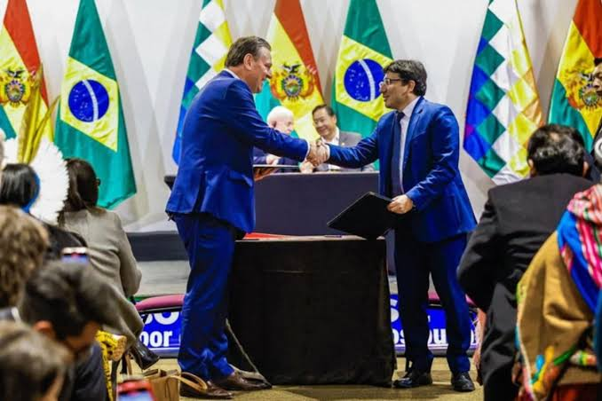

Brasil e Bolívia firmam acordos para ampliar oferta de fertilizantes
O ministro da Agricultura e Pecuária (Mapa), Carlos Fávaro, firmou dois acordos com a Bolívia visando aumentar a oferta de fertilizantes no Brasil, com o objetivo de elevar a produtividade do agronegócio brasileiro e aumentar a competitividade do setor.
O primeiro acordo é de cooperação para a comercialização de fertilizantes e cloreto de sódio, assinado com o ministro dos Hidrocarbonetos e da Energia da Bolívia, Franklin Molina Ortiz. O segundo é um memorando de entendimento para a exportação de fertilizantes ao Brasil, firmado com o ministro do Desenvolvimento Rural e Terras da Bolívia, Santos Condori.
Esses acordos têm como objetivo estabelecer os termos e condições para a exportação de fertilizantes e suas matérias-primas para o Brasil, focando no fortalecimento do agronegócio local. Além disso, buscam promover e implementar a cooperação técnica e científica por meio do intercâmbio tecnológico, pesquisa, desenvolvimento e inovação entre os dois países.
Fonte da informação
Outras notícias
Brasil e Bolívia firmam acordos para ampliar oferta de fertilizantes
Fonte da informação
Outras notícias

Condições climáticas causam impacto na colheita do tomate
Segundo análise recente da Emater/RS-Ascar, as condições climáticas desfavoráveis causaram sérios danos à colheita de tomate na região de Caxias do Sul.

Emergência fitossanitária para cítricos no PR é prorrogada
A emergência fitossanitária no Paraná foi prorrogada pelo governo do estado por mais 180 dias como medida de combate ao greening, uma das principais pragas que afetam os citros no mundo.

Nova invasão de propriedade rural no Oeste do Paraná
Equipes da Guarda Municipal de Guaíra foram mobilizadas na manhã desta segunda-feira (15) para atender uma ocorrência de invasão de propriedade privada.